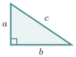
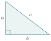
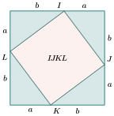
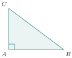
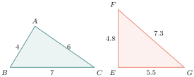
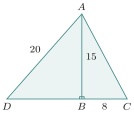
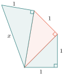

- ប្រើប្រាស់ទ្រឹស្តីបទពីតាគ័រ
- គណនារង្វាស់ជ្រុងនៃត្រីកោណកែង
- អនុវត្តទ្រឹស្តីបទពីតាគ័រក្នុងជីវភាពរស់នៅ

សួស្តីប្អូនៗ! នៅក្នុងថ្នាក់មុនៗ យើងបានស្គាល់ត្រីកោណកែងខ្លះៗមកហើយ។ ថ្ងៃនេះ លោកគ្រូនឹងនាំប្អូនៗទៅស្គាល់ទ្រឹស្តីបទដ៏ល្បីល្បាញមួយក្នុងគណិតវិទ្យា ដែលត្រូវបានគេស្គាល់តាំងពីសម័យបុរាណមកម្ល៉េះ នោះគឺ "ទ្រឹស្តីបទពីតាគ័រ"! វាជួយយើងគណនារង្វាស់ជ្រុងនៃត្រីកោណកែងបានយ៉ាងងាយស្រួល។ តោះ!
A. ទ្រឹស្តីបទពីតាគ័រ
គេឱ្យត្រីកោណកែងមួយដែលមានជ្រុង \(\displaystyle a,\ b,\ c\) ។

\(\displaystyle a\) និង \(\displaystyle b\) ជាជ្រុងកែង ហើយ \(\displaystyle c\) ជាអ៊ីប៉ូតេនុស (ជ្រុងដែលវែងជាងគេ និងឈមនឹងមុំកែង) ។
ការស្រាយបញ្ជាក់៖ គេយកត្រីកោណកែងប៉ុនៗគ្នាចំនួនបួន ដាក់ឱ្យបានជាការ៉េមួយដែលមានជ្រុង \(\displaystyle a+b\) ដូចរូបខាងស្ដាំ។ ចតុកោណ \(\displaystyle IJKL\) នៅកណ្តាលក៏ជាការ៉េ ដែលមានជ្រុង \(\displaystyle c\) ផងដែរ។

ផ្ទៃក្រឡានៃការ៉េធំ ស្មើ \(\displaystyle (a+b)^2 = a^2+b^2+2ab\) ។ ចំណែកផ្ទៃក្រឡានៃការ៉េតូច \(\displaystyle IJKL\) ស្មើ \(\displaystyle c^2\) ។ រីឯផ្ទៃក្រឡានៃត្រីកោណកែងទាំងបួន ស្មើ \(\displaystyle 4 \times \frac{1}{2}ab = 2ab\) ។ តាមរូបខាងលើគេបាន៖
ទ្រឹស្តីបទពីតាគ័រ៖ ក្នុងត្រីកោណកែង ការេលើអ៊ីប៉ូតេនុសស្មើនឹងផលបូកការេលើជ្រុងកែង។ បើ \(\displaystyle \angle BAC=90^\circ\) នោះ \(\displaystyle BC^2 = AB^2 + AC^2\) ។
ទ្រឹស្តីបទច្រាស់នៃពីតាគ័រ៖ បើ \(\displaystyle BC^2 = AB^2 + AC^2\) នោះ \(\displaystyle \angle BAC=90^\circ\) (មានន័យថាវាជាត្រីកោណកែង) ។

តើរូបមួយណាជាត្រីកោណកែង?

១. គិត៖ យើងត្រូវពិនិត្យមើលថាតើ ការេនៃជ្រុងដែលវែងជាងគេ ស្មើនឹងផលបូកការេនៃជ្រុងពីរទៀតឬអត់។
២. ជ្រើសវិធី៖ ប្រើទ្រឹស្តីបទច្រាស់នៃពីតាគ័រ។
៣. ធ្វើ៖
សម្រាប់ត្រីកោណ \(\displaystyle ABC\): ជ្រុងវែងជាងគេគឺ \(\displaystyle BC=7\)។
\[BC^2 = 7^2 = 49\]\[AB^2 + AC^2 = 4^2 + 6^2 = 16 + 36 = 52\]ដោយ \(\displaystyle 49 \neq 52\) យើងបាន \(\displaystyle BC^2 \neq AB^2 + AC^2\) ។ ដូច្នេះ \(\displaystyle ABC\) ពុំមែនជាត្រីកោណកែងទេ។
សម្រាប់ត្រីកោណ \(\displaystyle EFG\): ជ្រុងវែងជាងគេគឺ \(\displaystyle FG=7.3\)។
\[FG^2 = 7.3^2 = 53.29\]\[EF^2 + EG^2 = 4.8^2 + 5.5^2 = 23.04 + 30.25 = 53.29\]ដោយ \(\displaystyle 53.29 = 53.29\) យើងបាន \(\displaystyle FG^2 = EF^2 + EG^2\) ។ ដូច្នេះ \(\displaystyle EFG\) ជាត្រីកោណកែងត្រង់ \(\displaystyle E\) ។
៤. ពិនិត្យ៖ ការគណនាការេនៃទសភាគគឺត្រឹមត្រូវ។ ជ្រុង \(\displaystyle FG\) ឈមនឹងមុំ \(\displaystyle E\) ដូច្នេះវាជាមុំកែង ពិតមែន។
គេឱ្យត្រីកោណ \(\displaystyle ABC\) និងត្រីកោណ \(\displaystyle ABD\) កែងត្រង់ \(\displaystyle B\) ។ បើគេដឹង \(\displaystyle AB=15\mathrm{cm}\), \(\displaystyle BC=8\mathrm{cm}\) និង \(\displaystyle AD=20\mathrm{cm}\) ។ ចូរគណនា \(\displaystyle AC\) និង \(\displaystyle BD\) ។

១. គិត៖ យើងមានត្រីកោណកែងពីរ គឺ \(\displaystyle \Delta ABC\) និង \(\displaystyle \Delta ABD\) ដែលមានជ្រុងរួមគឺ \(\displaystyle AB\)។
២. ជ្រើសវិធី៖ ប្រើទ្រឹស្តីបទពីតាគ័រ ដើម្បីគណនា \(\displaystyle AC\) ក្នុង \(\displaystyle \Delta ABC\) និងគណនា \(\displaystyle BD\) ក្នុង \(\displaystyle \Delta ABD\) ។
៣. ធ្វើ៖
គណនា \(\displaystyle AC\)៖ ក្នុងត្រីកោណកែង \(\displaystyle ABC\) តាមទ្រឹស្តីបទពីតាគ័រ:
\[\begin{aligned} AC^2 &= AB^2+BC^2 \\ &= 15^2+8^2 \\ &= 225+64=289 \\ AC &= \sqrt{289}=17\mathrm{cm} \end{aligned}\]គណនា \(\displaystyle BD\)៖ ក្នុងត្រីកោណកែង \(\displaystyle ABD\) តាមទ្រឹស្តីបទពីតាគ័រ:
\[AD^2 = AB^2+BD^2 \Rightarrow BD^2 = AD^2-AB^2\]\[\begin{aligned} BD^2 &= 20^2-15^2 \\ &= 400-225=175 \\ BD &= \sqrt{175}\approx 13.23\mathrm{cm} \end{aligned}\]
៤. ពិនិត្យ៖ \(\displaystyle AC\) គឺជាអ៊ីប៉ូតេនុស វាត្រូវតែធំជាងជ្រុងកែង ( \(\displaystyle 17 > 15\) និង \(\displaystyle 17 > 8\) )។ រីឯ \(\displaystyle AD\) គឺជាអ៊ីប៉ូតេនុសសម្រាប់ត្រីកោណ \(\displaystyle ABD\) វាធំជាង \(\displaystyle BD\) ( \(\displaystyle 20 > 13.23\) ) ត្រឹមត្រូវ!
ចូរគណនារង្វាស់ \(\displaystyle x\) គិតជា \(\displaystyle \mathrm{cm}\) នៃរូបខាងស្ដាំ ។

© ២០២៦ លោកគ្រូ សាន សុខលី · «គណិតវិទ្យាថ្នាក់ទី៩ បែបទំនើប» · រក្សាសិទ្ធិគ្រប់យ៉ាង។ សៀវភៅនេះកំពុងសរសេរ ខ្លឹមសារអាចនឹងកែប្រែ។